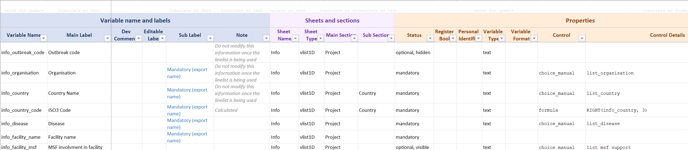
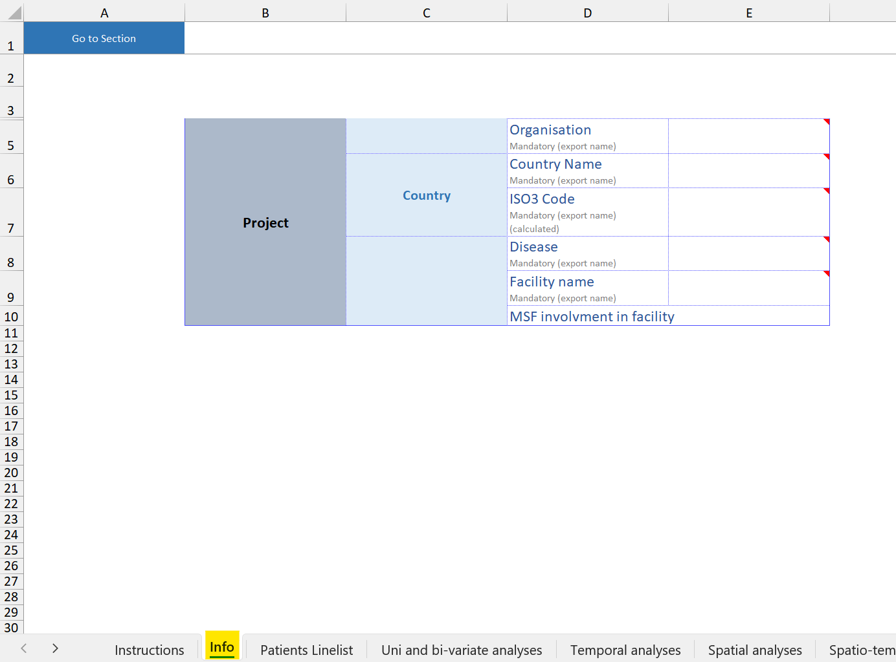
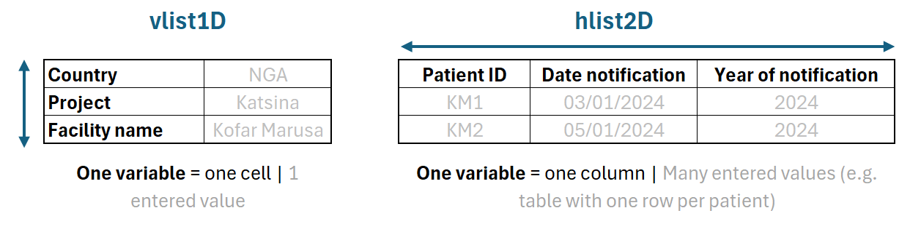

Tutorial
About this tutorial
In this tutorial you will learn to modify an OBT linelist to add variables and analyses.
🎯 Objectives
- Understand the OBT linelist building workflow
- Know how to add variables to an OBT linelist by using the dictionary
- Know how to add analyses (tables and graphs) to an OBT linelist
- Generate a linelist from a dictionary.
🧭 Context
MSF has been working in eastern and southern Chad since 2006 where our teams provide medical care and assistance to displaced people and local communities who often struggle with a lack of food.
A measles OBT linelist was deployed, and need to be tweaked to better serve the needs of the field.
Activities
In this tutorial, you will get access to several files that we are going to use:
- a (simplified) dictionary for a measles OBT linelist
- an empty linelist generated by that dictionary
- the most recent designer file
We will use this files to discover how to generate linelists from a setup file, and modify this setup file to generate an improved linelist.
Explanations will be given in simple text, or boxes (tips, notes etc.) and instructions will be given in instructions boxes:
I contain important information!
I am a handy bit of information that may be omitted if you are in a hurry, but totally deserve some attention at some point.
Now do do something!
Get ready
Download and unzip the tutorial materials
The files that you are going to use are stored on Github, bundled in a zip archive.
- Click on the button to download the archive. Save it on your computer (in your Downloads folder for example).
- Unzip the whole archive and save the files locally. It is better to save the unzipped folder in a location that is not actively synchronised with OneDrive at the moment.
Description of the folder content
- a setup file for a measles OBT linelist
- an empty linelist generated by that dictionary to better help you see how the specs translate into the final product)
- the most recent designer file
Part 0: unlock files and functionalities
OBT linelists use VBA macros to add functionalities. As a consequence, linelists that come from the internet often need to be unblocked, and macro enabled in them.
Unblock your files, or make sure they are already unlocked. If you have never done that before, follow the steps from this page
Part 1: First contact with the setup file
In this part, we are going to inspect the setup file and generate the linelist.
Open the setup file that you downloaded and inspect it. You should see the following sheets/tables:
- Dictionary
- Choices
- Exports
- Analyses
- Translation
- _checkRep
Open the associated linelist file, as it will help you make the link between the specs and the final product.
The “Dictionary” sheet contains a big table, that we are going to explore little by little. One line of this table contains one variable. The columns contain many properties to describe this variable:
- its name (aka the unique identifier of the variable, that the user will not see by default)
- its label (a longer description that the user will see)
- in which sheet it belongs
- in which section it belong
- should it be mandatory, or can it be hidden?
- what is the type and format of the variable
- etc.
To start getting a sense of how this work, let’s look at the rows 6 to 12:
 We can see seven variables, which names all start with “info_”.
In parallel, go to the “Info” sheet of the linelist. Try to understand how the columns of the setup that have content translate in the linelist. Some of them should be easy, some of them we will explain:
- labels, sub-labels
- have you found where the “Note” goes?
- Sheet name is obvious. Sheet type… not so much. We will explain.
- Do you understand why you don’t see the “Outbreak code” column in the linelist? Do you know of the steps to make it appear?1
- Enter some data in the “Info” sheet of the linelist. Does it help you figure out what the “Control” and the “Control Details” column do in general (even if the dropdown might be obscure so far)?
1 Hint: There is a button to show and hide variables in the linelist OBT menu.

A couple of things that you need to know:
Variable name: the variable name is not obvious in the linelist. In the “Info” sheet, you can see it at the left of the formula bar if you select a cell that contain data (e.g. E5).
Colours: some variable names and labels are in colour. This is a choice of the the person who developed this setup, at it helps them differentiate specific variables. You can ignore them, unless it makes sense to you.
Dev comments: this free text column is for the sole benefit of the setup file developer, to add technical or practical information. It is not used by the designer and does not affect the generated file. You can ignore it, unless it makes sense to you.
Sheet type controls whether the table created is made of variables that contains one value (perfect for metadata, like the “Info” sheet), or several values (a table made of columns, like the “Patient linelist” sheet). More information in the documentation

Status controls the visibility of variables. Mandatory variables are always shown, Hidden are always hidden (good for obscure calculated columns) and *Optional, visible” and “Optional, hidden” can be changed, but have different default values. In our exemple, the Outbreak code is optional but hidden by default, so you don’t see it in the linelist by default. On the other hand “MSF involvment in the facility” is shown by default, but you could hide it using the Show/Hide.
Control: the “Control” and “Control Details” define the content of the variable.
Hopefully, you have figured that if the column is empty for a variable, the variable is free (e.g. the “Facility name” variable). You probably also figured out that choice_manual create cells with dropdown menus, like “Organisation” or “Country”. We use these variables as often as possible in our linelist, to improve data quality. For these variables, we need to provide a list of options, categories, to fill the dropdown menu. The “Control Details” contain names, such as “list_organisation”. These lists are defined “Choices” sheet.
Go to the “Choices” sheet. Can you find the lists used in the “Info” sheet?
To summarise, the “Choices” sheet in the setup contains all the values for all the dropdown menus. The name of the list (that by convention we often name “list_xxx”) makes the link between the values of the list and the variable in the “Dictionary” sheet.
Finally, you also figured out that the control formula defines a calculated variable (cell or column), and that in this case the “Control Details” column contains the Excel formula (in English).
Let’s look atthe rest of the variables. All of them are for the data entry sheet, the sheet “Patient Linelist” in the linelist file. For such a big table the section and supsection columns start to be very useful.
- Going back and forth between the setup and the linelist, do you understand what the control *choice_custom_ does?
- Which columns are defined as containing personnal informations?
- Do all of the Variable type options make sense to you?
- What about the Variable format?
If you scroll down rapidly, you will see that there are a lot of variables, in the order that you see them in the linelist. There is a mix of data entry columns and calculated columns. Most of the calculated columns are hidden, or hidden by default, and derive useful quantities, such as age group, or week associated with data columns. Some of the formulas are simple, some of them more complicated and of them are not native to Excel (CASE_WHEN()2 or CHOICE_FORMULA() for example) and were coded explicitly to simplify Excel syntax.
2 R users should be happy about this one!
Have a quick look at the other sheets of the setup.
- How many exports do you think the linelist will do?
- Do you think there will be a sheet with univariate and bivariate analyses encoded? What about Spatio-temporal analyses?
- Which languages are available for the cholera linelist?
Part 2: Generate a linelist from an existing setup
Ok, now that you understand that the setup file contains all the specifications of the linelist, including analyses, exports and even translations, let’s turn this glorified dictionary into a linelist.
- Save and close the setup file
- Open the designer file